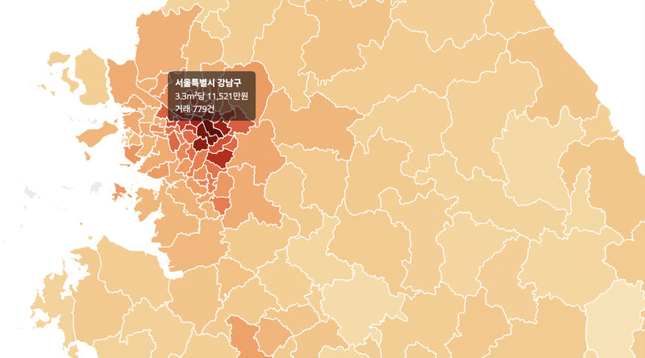
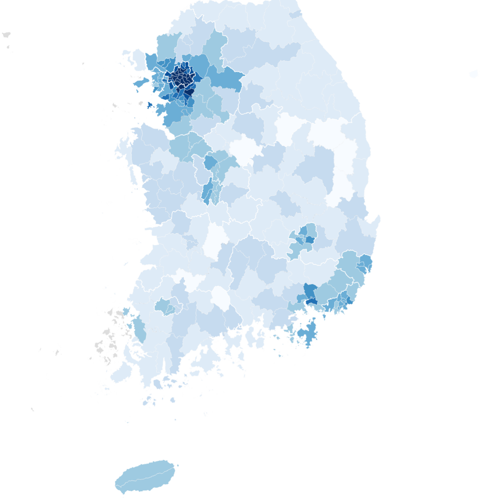
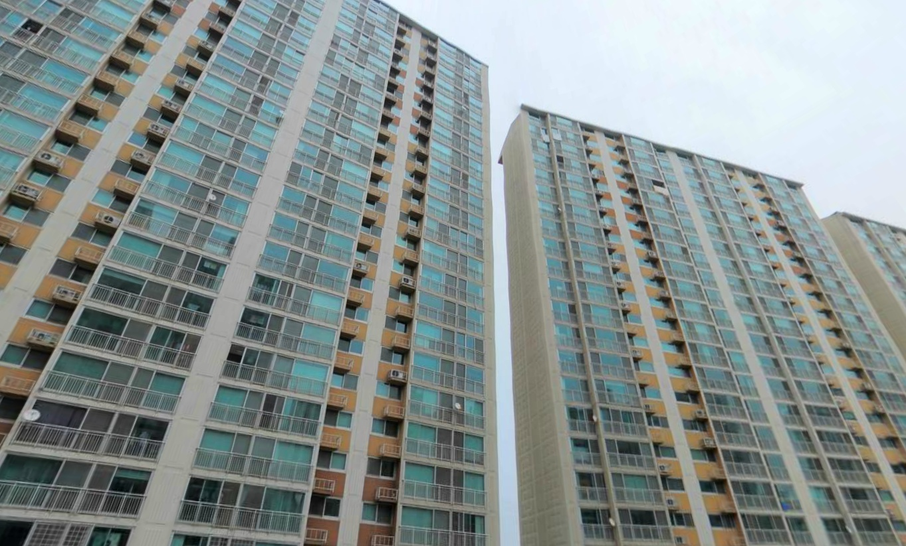

#아파트
-
아파트 상속 등기 직접 하기: 필요 서류, 취득세, 국민주택채권
엄마가 돌아가신 후 아파트 지분 상속을 법무사 없이 직접 처리했다. 상속 등기를 위해 어떤 서류가 필요한지와 취득세와 국민주택채권은 어떻게 계산하는지 실제로 발로 뛰면서 겪은 경험을 정리했다.
-
12년 전과 비교한 아파트 매매가, 벌어진 격차
2014년에 전국 아파트 실거래가 데이터를 분석한 적이 있다. 12년 후 2026년, 대한민국의 아파트 실거래가는 어떻게 변화했는지 전국 시군구별로, 수도권 동 단위로 비교해봤다.

-
지역별 아파트 실거래가 분석
얼마 전 내 집을 장만했는데 그 과정에서 국토교통부에서 주택 실거래가를 공개하고 있다는 것을 알게 되었다. 개발자로서 정부 3.0이라든지 공공 데이터 개방에 대해 관심이 많이 있었는데 이 주택 실거래 사이트는 데이터 개방, 활용 측면에서 도저히 봐줄 사이트가 안돼 보였다. 왜 데이터를 이렇게 찾기 어렵고 받아갈 수도 없게 만들었냐고!결국 내가 직접 의미 있는 아파트 실거래가 분석을 해보기로 하고 여기 일부를 공개한다. 이 과정에서 데이터를 뽑아 오기 위한 리버스 엔지니어링이라든가(이건 개방형 데이터가 아니잖소!) 다양한 오픈 소스 소프트웨어 사용, 시행착오, 시간 투자가 있었음을 밝힌다. 이 과정이나 좀더 다양한 분석 데이터는 앞으로 차츰 올려보기로 하겠다.

-
내 집 갖기
속물처럼 들리지만 대부분의 사람들에게 사실상의 인생의 목표는 돈 벌기다. 여기서 목적과 목표를 구별한다면 목적은 여유 있게 살기 위해서, 애들을 좋은 대학에 보내기 위해서 등등 결과적으로 행복하게 살기 위해서라고 할 수는 있겠지만 직접적인 목표는 결국 우리들의 사상 속에서 돈 벌기로 귀결되고 만다. 이러한 돈 벌기의 중요한 목적 중 또 하나가 내 집 갖기, 즉 좋은 집을 내가 소유하며 사는 것이다.최근에 나 역시 좋은 집에 살아야겠다는 일념 하에 수십 집을 둘러보다가 결국 내 집을 장만하는 큰 일(?)을 벌이고 말았다. 전세 만기가 다가오는데 전셋값이 계속 오른다고 하니 이러다간 전세값, 이사 비용으로 남 좋은 일만 시킬 거 같아서 오래 살 생각으로 덜컥 집을 계약했다.
